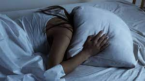
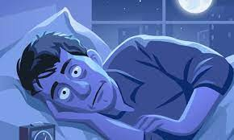
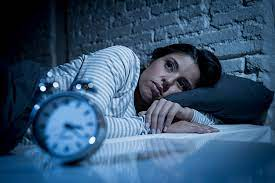
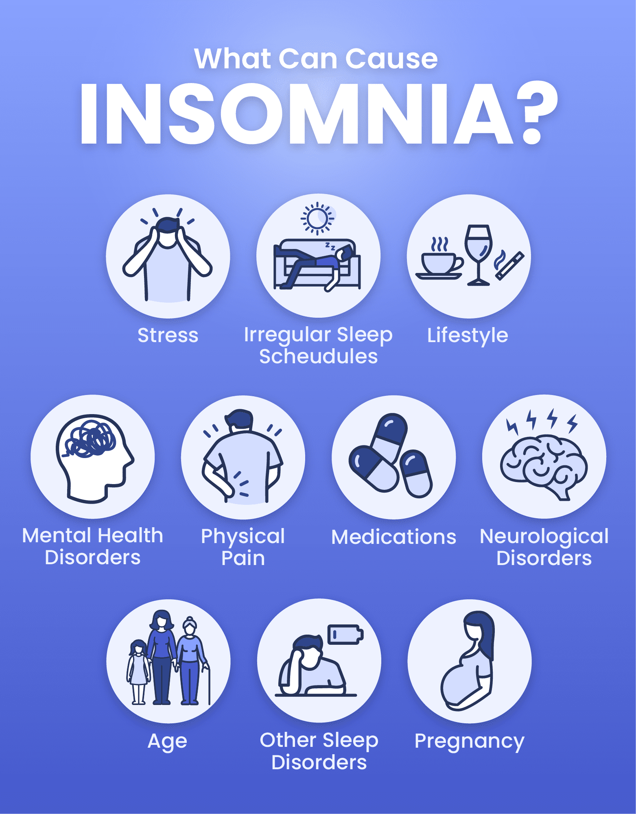

news
Quote
My eyelids are heavy, but my thoughts are heavier.
What is Insomnia?
The inability to fall or stay sleep. Insomnia, also known as sleeplessness, is a sleep disorder in which people have trouble sleeping.

How it affect your body?
People with insomnia report a lower quality of life compared with people who are sleeping well. Increased risk and severity of long-term diseases or conditions, such as high blood pressure and heart disease

Symptoms
Difficulty falling asleep at night
Waking up during the night and being unable to return to sleep
Waking up earlier than desired
Feeling tired after a night's sleep

Causes
Insomnia usually is caused due to stress, trauma or anxiety. Few short term causes could be due to disruptions in circadian rhythm

Major changes in adults
The major changes occur in insomnia is agening. We
required total sleep stays the same or slightly decreased (
6.5 to 7 hours per night) . It may be harder to fall asleep
and you may spend more total in bed. The transition
between sleep and waking up is often abrupt . Older
people wake up average of 3-4 times each night.
Sleep difficulty is annoying problem . Long term insomnia
is major cause of auto accidents and depression. Sleep
deprivation can eventually cause confusion and mental
changes.
What causes Insomnia in adults?
In adult stress is common
reason in this competitive world where we are always
trying to do better than others doing an quite stressful,
changing of job, city, divorced can major reasons.
Poor sleep occurs if you work day and night and we use
mobile phones at night this also cause insomnia. If we
can’t sleep in a day so, first consult to an doctor they give
an proper treatment. Thyroid, diabetes , cancer are
common diseases occur in today’s life. Smoking and
drinking are common in adults.